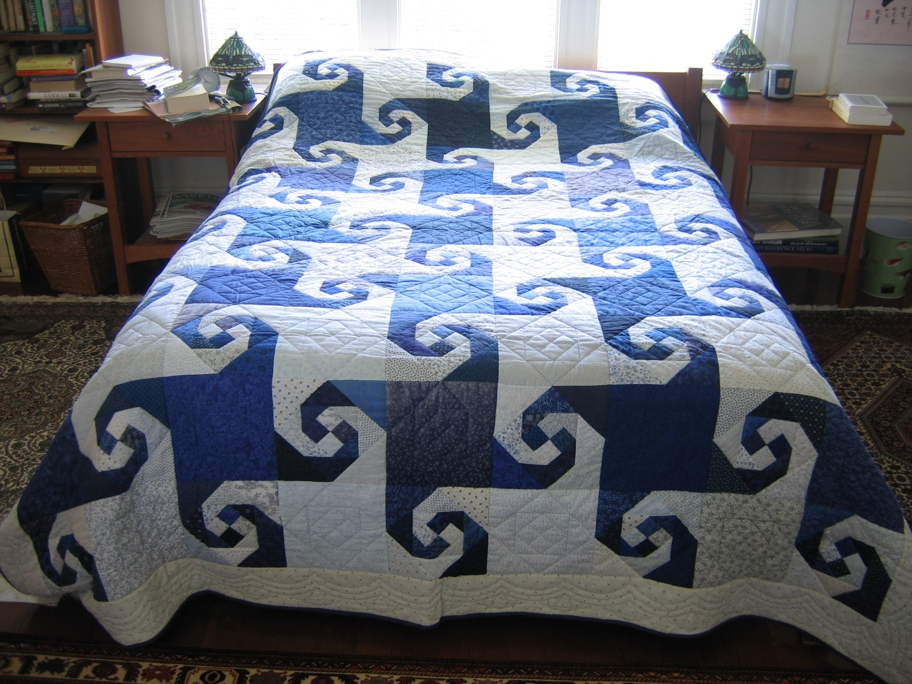

This blue and white quilt is in the traditional snail's trail pattern and was chosen for my son and daughter in law when they married. We all like Escher and this is an example of a tesselation. It was my first experiment with paper piecing and proved to me that it was better that way. I tried samples both with and without paper and though I thought I could do well without it I liked the result better with it. So far four quilts have been made with this collection of fabrics and a fifth is in progress.